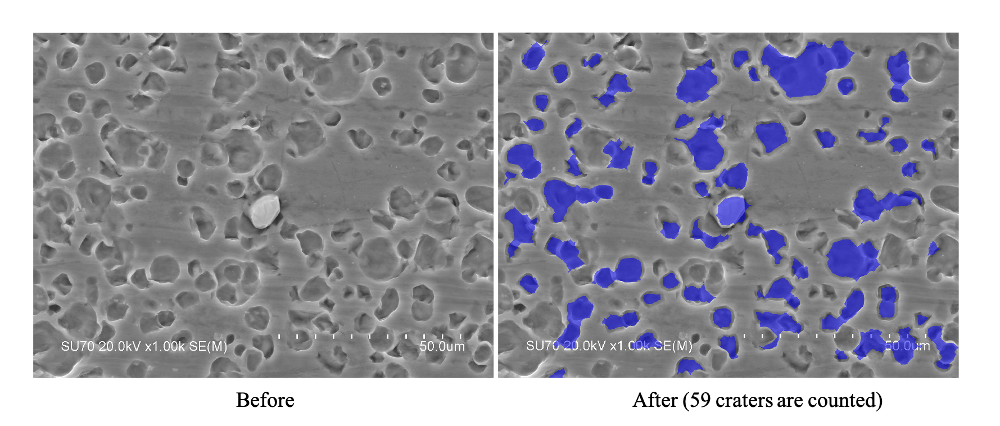

MATLAB Image Processing Toolboxを使ってクレーターを数える
MATLAB Image Processing Toolboxを使って，下の画像のようにクレーターを数えた．

画像処理の流れ
対象画像には以下のような特徴がある．
- クレーターが完全な円ではない．
- クレーター外部と内部の明るさの差が小さい
そこで対称性に依らずクレーターを検出するために，エッジ検出を主とした画像処理を施した． 具体的な流れは下記の通りである．
- 画像読み込み
- 2次元適応フィルター処理によるノイズの除去
- コントラスト調整
- エッジの検出（キャニー法）
- 膨張
- 画像領域内部にある穴の塗りつぶし
- 収縮
- 小さなオブジェクトの削除
使用環境
- MATLAB R2020b
- Image Processing Toolbox
まとめ
検出率は6~7割程度である． 複数のクレーターを1つとカウントする，そもそも検出できてない等の課題があるが，手動カウントの補助程度には使えそう．
参考
ソースコード
clear all;
close all;
clc;
% 画像読み込み
I = imread('original.jpg');
imshow(I)
title('Original Image');
% ノイズ除去
K = wiener2(I,[10 10]);
imshow(K)
% コントラスト調整
J = imadjust(K);
imshow(J)
% エッジ検出
[~,threshold] = edge(J,'canny');
fudgeFactor = 0.8;
BWs = edge(J,'canny',threshold * fudgeFactor);
imshow(BWs)
% 膨張
se90 = strel('line',5,90);
se0 = strel('line',5,0);
BWsdil = imdilate(BWs,[se90 se0]);
imshow(BWsdil)
% 内部塗りつぶし
BWdfill = imfill(BWsdil,'holes');
imshow(BWdfill)
% 収縮
seD = strel('diamond',5);
BWsero = imerode(BWdfill,seD);
BWsero = imerode(BWsero,seD);
imshow(BWsero)
% 小さなオブジェクト削除
BWfinal = bwareaopen(BWsero, 500);
% 可視化
imshow(labeloverlay(I,BWfinal))
title('Mask Over Original Image')
% 数を測定
statsl = regionprops(BWfinal,'Centroid');
Centroid = cat(1, statsl.Centroid);
num = numel(Centroid(:,1)) % クレーターの数
% 画像を保存
FileName = strcat(datestr(datetime('now')),'__',num2str(num),'craters','.png')
saveas(gcf,FileName)